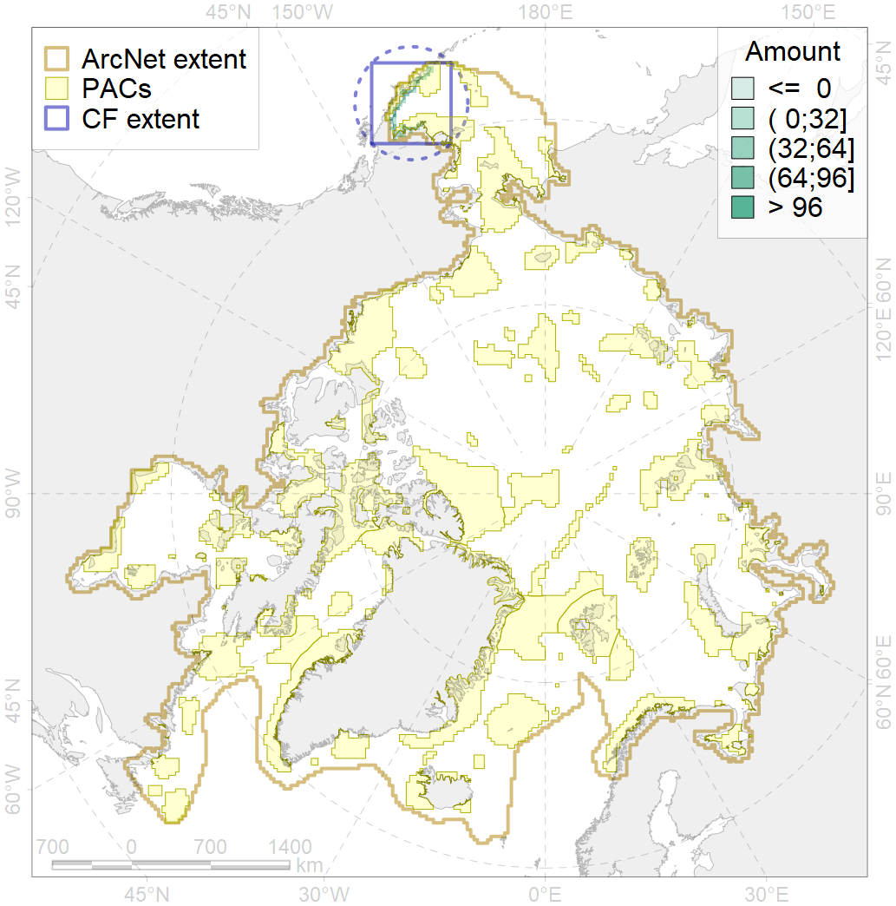
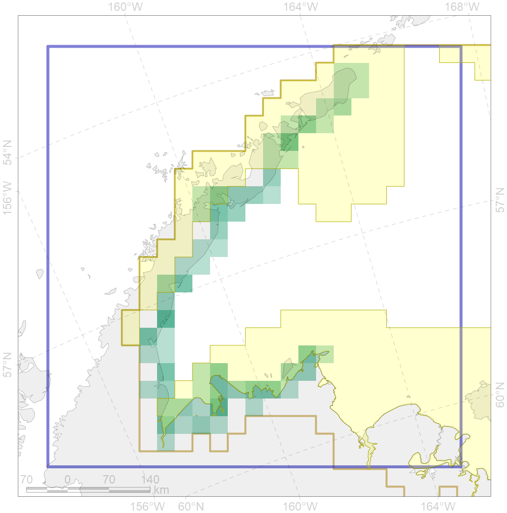

7221

| CF ID | 7221 |
| CF Name | Kelp forests along the Bering Sea coast of southern Alaska and Aleutian Islands |
| Time Period | 1970-2015 |
| Source(s) | Feelby-Dexter et al., 2019 |
| Seasonality | January - December |
| Depth Horizon | 1-30 m |
| Methodology | Extent of kelp forest along the shore is derived acoording to frequent point observations reported in the literature and inferring quasi-continuous extent of kelp communities between points |
| Author Name | V. Spiridonov |
| Notes | |
| Conservation Target Set in the Scenario | 0.15 |
| Conservation Target Achieved in the Scenario | 0.565 (Scenario: 376.4%) |
| PAC ID | Proportion in the PAC | Contribution to ArcNet Target Achievement | PAC’s Contribution to the Achieved Target |
|---|---|---|---|
| 1 | 23.8% | 159.0% | 42.2% |
| 3 | 35.1% | 206.5% | 54.9% |
| inner | 59.0% | 365.5% | 97.1% |
| outer | 41.0% | 11.0% | 2.9% |